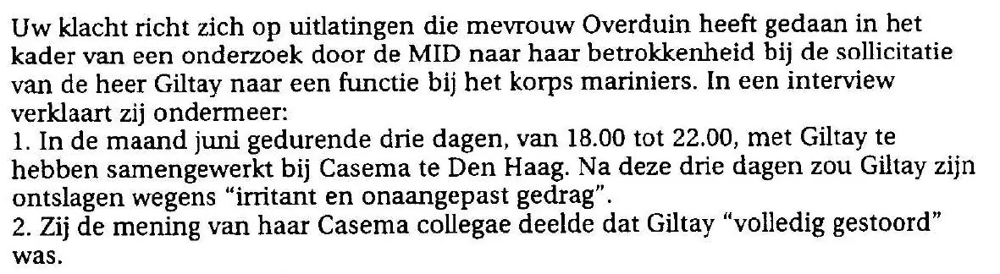

Prueba · Carta
Fiscal jefe de La Haya a Giltay, 26 de agosto de 1999
El pasaje
«Su querella se refiere a declaraciones que la señora Overduin hizo en el marco de una investigación del MID sobre la implicación de ella en la candidatura del señor Giltay a un puesto en el Cuerpo de Infantería de Marina. En una entrevista declara, entre otras cosas: 1. Haber trabajado durante tres días del mes de junio, de 18.00 a 22.00, con Giltay en Casema, en La Haya. Tras esos tres días, Giltay habría sido despedido por “comportamiento irritante e inadaptado”. 2. Que ella compartía la opinión de sus colegas de Casema de que Giltay estaba “completamente loco”». Página 1, el párrafo que sigue a la frase inicial, con las dos declaraciones numeradas. Traducido del neerlandés; el texto original figura a continuación.
Texto original
“Uw klacht richt zich op uitlatingen die mevrouw Overduin heeft gedaan in het kader van een onderzoek door de MID naar haar betrokkenheid bij de sollicitatie van de heer Giltay naar een functie bij het korps mariniers. In een interview verklaart zij ondermeer: 1. In de maand juni gedurende drie dagen, van 18.00 tot 22.00, met Giltay te hebben samengewerkt bij Casema te Den Haag. Na deze drie dagen zou Giltay zijn ontslagen wegens ‘irritant en onaangepast gedrag’. 2. Zij de mening van haar Casema collegae deelde dat Giltay ‘volledig gestoord’ was.” La carta escribe el apellido «Overduin», como también hacen las cartas de 1999 del Ministerio de Defensa; el ensayo y el libro emplean «Overduyn». En el original, las dos expresiones citadas figuran entre comillas dobles y cada una de las dos declaraciones numeradas empieza en una línea nueva. La carta escribe además «ondermeer» (entre otras cosas) en una sola palabra. La segunda declaración numerada es la misma frase que el informe 1999/507 del Defensor del Pueblo de los Países Bajos reproduce con «Q» en lugar de Casema y «(verzoeker; N.o.)» (solicitante; Defensor del Pueblo) en lugar de Giltay; aquí la frase no está anonimizada.

Por qué importa este documento
La ministra de Defensa, Ank Bijleveld, negó en 2018 que Defensa hubiera calificado nunca a Giltay de «completamente loco». El ensayo responde que esa calificación no consta solo en el informe del Defensor del Pueblo de los Países Bajos (Nationale ombudsman): desde agosto de 1999 consta ya por escrito en un documento del Ministerio Público (Openbaar Ministerie). Se trata de esta carta. Antes de decidir no ejercer la acción penal, el fiscal jefe reproduce lo que Overduyn declaró en la entrevista del MID (servicio de inteligencia militar), entre otras cosas que compartía la opinión de sus colegas de Casema de que Giltay estaba «completamente loco».
Procedencia
- Documento
- Carta, dos páginas, con la notificación de una decisión de no ejercer la acción penal
- Remitente
- Ministerio Público, Fiscalía del Distrito de La Haya, Oficina de Dirección (Stafbureau), Prins Clauslaan 60; a nombre de S.J.A.M. van Gend, fiscal jefe y jefe de la fiscalía
- Destinatario
- E.F. Giltay, Scheveningen
- Fecha
- 26 de agosto de 1999
- Referencia
- STAF/HO 871 00088
- Referencias
- El escrito de querella (klaagschrift) de Giltay del 21 de julio de 1999. El auto del Tribunal de Apelación de 2002 menciona el escrito de querella de esa fecha como complemento de su solicitud de enjuiciamiento del 28 de junio de 1999
- Resultado
- No se ejerce la acción penal. Se considera que el artículo 268 del Código Penal neerlandés no es aplicable porque las declaraciones no se hicieron en una querella o denuncia, sino en el marco de una investigación interna; y que tampoco lo son los artículos 261 y 262, porque las declaraciones se hicieron dentro de esa investigación y no con la intención de darles publicidad, y porque la declaración 2 no se refiere, además, a un hecho concreto
- Queja
- Contra esta decisión cabe presentar un escrito de queja ante el Tribunal de Apelación de La Haya, conforme al procedimiento del artículo 12 del Código de Procedimiento Penal neerlandés
- Idioma
- Neerlandés
- Conservado por
- Archivo del autor
- Véase también
- Investigación interna para el jefe de Estado Mayor del MID, 12 de febrero de 1999Informe 1999/507 del Defensor del Pueblo de los Países Bajos, 17 de diciembre de 1999Novini, Defensie flatert voort, 25 de agosto de 2018
Citado en: el ensayo «La prohibición cayó, el libro quedó en pie» en el capítulo (3) «Lo que revela el libro: el encubrimiento en torno a Srebrenica» y en la diapositiva «Gabinete de la Reina · 2000» de la presentación «La historia en el mapa».
Ficha de prueba: https://
Documento: https://
Modificado por última vez el 13 de septiembre de 2026, consultado el 27 de noviembre de 2026.

Esta página es una ficha de prueba del libro El general del encubrimiento de Edwin Giltay y del sitio web que lo acompaña.